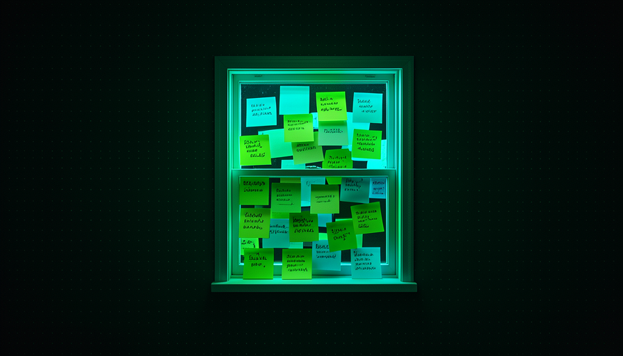
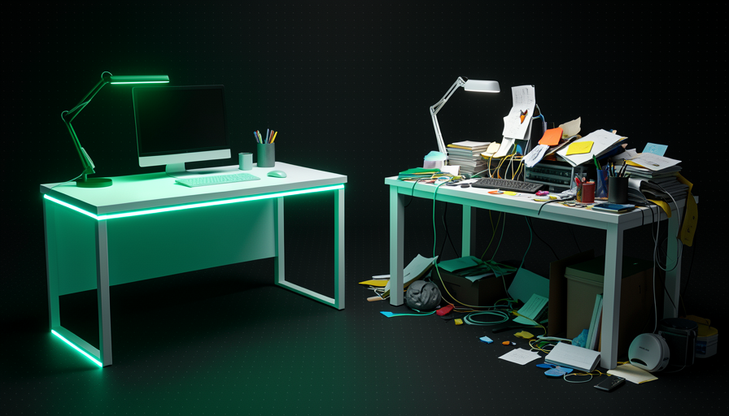
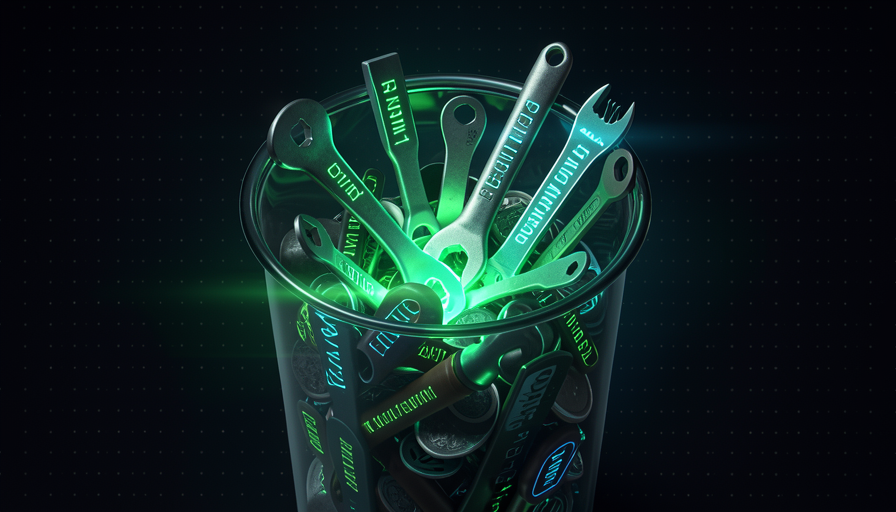

📖 Glossário vivo (leia antes — volte sempre que precisar)
Como esta é a trilha de Fundamentos, aqui todo termo é explicado em linguagem simples. Estes são os termos novos deste módulo:
true) que você liga numa skill pra dizer "só EU invoco, o modelo não". Quando ligada, a description daquela skill não vaza mais pro contexto.🫥 O que vaza no contexto
🧠 Imagine assim: uma mesa de trabalho. Tudo que você for fazer hoje precisa caber em cima dela. Se você deixa um cardápio de cada restaurante da cidade espalhado na mesa — "pra eventualmente escolher onde almoçar" — sobra pouco espaço pro trabalho de verdade. A context window é essa mesa: finita, e cada papel cobra lugar.
A IA não "lembra de tudo" — ela só consegue olhar pra um tanto de texto de cada vez. Esse espaço tem nome: context window (janela de contexto). Ele é medido em tokens, e cada coisa que entra na janela — seu pedido, o histórico da conversa, os arquivos abertos — gasta uma fatia. O problema é que muita coisa entra sem você perceber.
O exemplo central de Pocock são as skills. Toda skill instalada tem uma description — uma frase que diz pra quê ela serve. É por essa frase que o modelo decide se vai usar a skill. Mas pra poder decidir, ele precisa ver a description o tempo todo. Ou seja: a description vaza pro contexto mesmo quando a skill nunca é usada. Nas palavras de Matt: "toda skill vaza sua description na janela de contexto." O erro comum do iniciante é instalar dezenas de skills "porque podem ser úteis" — e cada uma cobra seu pedaço da mesa, vazia ou não.
Quanto mais coisa empilhada, menos mesa sobra pro raciocínio da IA (a caixa que brilha).

⚠️ Erro comum de iniciante
Instalar tudo que parece legal "por garantia". Cada skill, cada plugin, cada MCP server adiciona texto que a IA precisa carregar sempre — mesmo que você nunca use aquilo. O contexto vai inchando e o raciocínio piora.
Em 1 frase: a context window é finita e cada skill instalada vaza sua description pra dentro dela — gastando espaço mesmo quando não é usada.
Indo mais fundo (opcional): por que "janelas grandes" não resolvem?
Modelos novos têm janelas enormes (centenas de milhares de tokens). Mas mais espaço não é mais qualidade: quanto mais lotado o contexto, mais a IA "se perde" no meio do barulho e mais lento/caro fica cada passo. O objetivo não é encher a janela — é manter dentro dela só o que importa agora.
💸 O custo de 100 skills
🧠 Imagine assim: uma cozinha com 100 receitas coladas na parede. Antes de cozinhar qualquer prato, o cozinheiro tem que ler o título das 100 pra escolher. Se você só faz arroz, as outras 99 só atrapalham a vista. Cada receita na parede cobra atenção — mesmo a que você nunca usa.
Pocock dá o número que vira regra de bolso: "100 skills = 100 descriptions no contexto". Não é que cada skill seja cara por si — é que o conjunto de descriptions é carregado junto, toda vez, pra que o modelo saiba o que existe. Dez skills você nem nota. Cem skills viram um bloco de texto que o modelo precisa reler a cada passo só pra decidir o que fazer.
O porquê é direto: a description existe pra o modelo poder invocar a skill sozinho. Se ela está lá pra ser "auto-escolhida", ela tem que estar visível. Some isso a MCP servers (cada um descreve suas ferramentas), ao CLAUDE.md e ao histórico da conversa, e a mesa lota antes mesmo de você pedir qualquer coisa. O erro comum: tratar "instalei" como "de graça". Não é — você está pagando contexto por algo que talvez use uma vez por mês.
Recuperação rápida: por que "100 skills = 100 descriptions no contexto"?
Em 1 frase: "instalei" não é "de graça" — 100 skills carregam 100 descriptions na mesa toda vez que a IA pensa.
🔒 disable model invocation
🧠 Imagine assim: em vez de colar as 100 receitas na parede da cozinha, você guarda a maioria numa gaveta. Elas continuam ali, prontas — mas só aparecem quando você abre a gaveta e pede. A parede fica limpa; a vista (o contexto) volta a ser sua.
Existe um interruptor pra isso: disable model invocation. Toda skill pode ser de dois tipos. Quando o modelo pode escolhê-la sozinho, a description tem que ficar visível (vaza). Quando você liga disable model invocation: true, você diz: "essa skill só eu invoco". Resultado prático: a description daquela skill não vaza mais pro contexto — ela some da parede e vai pra gaveta.
Pocock dá o exemplo da skill "engineering zoom out": ele a marca como disable model invocation, então o modelo nunca a puxa por conta própria — só ele, o humano, chama quando quer. Isso casa com a filosofia dele: prefere procedures (que você invoca) a abilities (que o modelo invoca), porque quer estar "no volante", não delegar o pensamento. Nas palavras dele: "I know my skills, I don't want to delegate my thinking." O erro comum é o oposto: deixar tudo auto-invocável "pra ser esperto" e, com isso, lotar a janela com descriptions que você poderia ter escondido.

🔬 Exemplo resolvido: escondendo uma skill
Você tem uma skill "engineering zoom out" que só usa quando quer sair do detalhe e olhar o sistema todo. Você não quer que a IA decida usá-la sozinha. Solução: ligar a chave no topo (frontmatter) da skill.
--- name: engineering-zoom-out description: Sair do detalhe e revisar a arquitetura do sistema. disable-model-invocation: true # so EU invoco — a description NAO vaza --- # Engineering zoom out 1. Liste os modulos e suas responsabilidades. 2. Aponte acoplamentos e dependencias circulares. 3. Sugira 1 refator que reduz a complexidade do todo.
Resultado: a skill continua disponível pra você chamar; mas a frase do description deixou de ocupar contexto a cada passo do modelo.
Em 1 frase: disable model invocation: true tira a description da parede e guarda a skill na gaveta — só você invoca, e o contexto respira.
🎈 Bloat de instruções
🧠 Imagine assim: dar pra um funcionário novo um manual de 300 páginas no primeiro dia, com regras pra tudo. Ele se afoga no manual e esquece a tarefa de hoje. Um cartão de 1 página com as 5 regras que importam funciona muito melhor.
Skills não são as únicas culpadas. O CLAUDE.md (ou agents.md), os MCP servers e os plugins também entram na janela. O bloat é exatamente isso: instrução demais empilhada. Pocock resume com uma frase que vira diagnóstico: "todo mundo incha sua context window com coisa demais."
O porquê de doer: cada token de instrução é um token a menos pro raciocínio — e, pior, instruções contraditórias ou irrelevantes confundem o modelo. Um CLAUDE.md de 50 regras onde 45 não se aplicam à tarefa de agora é ruído. O erro comum é "acumular": toda vez que a IA erra, você adiciona mais uma regra. O manual cresce, o resultado piora, e você nunca remove nada. A direção certa é a oposta — cortar até doer e só manter o que prova seu valor.
✓ Contexto enxuto
- • Só as skills que você usa de verdade.
- • CLAUDE.md curto, com regras que se aplicam sempre.
- • Esconder (gaveta) o que é raro.
✗ Contexto inchado
- • Tudo instalado "por garantia".
- • Uma regra nova a cada erro, sem nunca remover.
- • MCP servers ligados que você nem usa.
Em 1 frase: bloat é instrução demais empilhada — cada token de manual é um token a menos de raciocínio.
♻️ O reset radical (prévia)
🧠 Imagine assim: uma garagem entulhada de anos. A melhor forma de organizar não é mexer item por item — é esvaziar tudo no quintal e só trazer de volta o que você realmente usa. O resto você descobriu que nem fazia falta.
A receita mais radical de Pocock pra desinchar é o reset de 2 passos (você verá ele inteiro na Trilha 5). Passo 1: delete tudo — toda skill, todo plugin, todo MCP server, seu CLAUDE.md, agents.md → volte ao "zero absoluto" e observe o agente trabalhar nesse modo básico. A frase dele é direta: "everyone bloats up their context window with too much stuff." Veja o que a IA faz sem nada por cima.
Passo 2: camade de volta, devagar — e que sejam procedures (você invoca), instaladas de um jeito que dá pra customizar e experimentar. Traga só o que você sentir falta de verdade (ex.: o brainstorming do superpowers). A lógica é a da garagem: depois do reset, a maioria das skills que você "achava essenciais" você nem reinstala. É o jeito honesto de descobrir o que era bloat. O erro comum é pular o passo 1 — sem esvaziar primeiro, você nunca sente o quanto estava entulhado.

Em 1 frase: delete tudo até o zero, observe a IA "pelada", e só recame o que você sentir falta de verdade.
🧼 Higiene de contexto
🧠 Imagine assim: escovar os dentes. Não é uma reforma única — é um hábito pequeno e constante que evita o problema grande. Higiene de contexto é a manutenção semanal que mantém a mesa limpa sem precisar do reset radical toda hora.
Fechando o módulo (e a Trilha 1): a regra de ouro é "cada skill cobra". Trate a context window como um recurso escasso que você gerencia ativamente. Não é só esvaziar uma vez — é um hábito: audite o que vaza, esconda (gaveta) o que é raro com disable model invocation, corte o bloat do CLAUDE.md, e desligue MCP servers que você não usa. Abaixo, o checklist de higiene — copie e rode toda semana antes de começar um trabalho pesado:
CHECKLIST — context window escasso ("cada skill cobra")
[ ] SKILLS — quantas estao instaladas? Usei cada uma no ultimo mes?
[ ] VAZAMENTO — quais descriptions estao vazando a toa? (some-as)
[ ] GAVETA — as raras estao com `disable model invocation: true`?
[ ] CLAUDE.md — toda regra ainda se aplica? Corte as que nao.
[ ] MCP/PLUGINS — algum ligado que eu nao uso? Desligue.
[ ] RADICAL — se ainda estiver inchado: delete tudo, observe, recame.
Regra: cada item na janela e um item a menos de raciocinio.
Recuperação rápida: qual é o lema deste módulo sobre a context window?
Em 1 frase: higiene de contexto é o hábito de manter a janela limpa — cada skill cobra, então só pague pelo que usa.
🧾 Resumo do Módulo
Você concluiu a Trilha 1! Próxima trilha:
Trilha 2 — Habilidades Humanas: o que você precisa dominar pra extrair o máximo do harness (a IA já comeu o tático; suba pro estratégico).